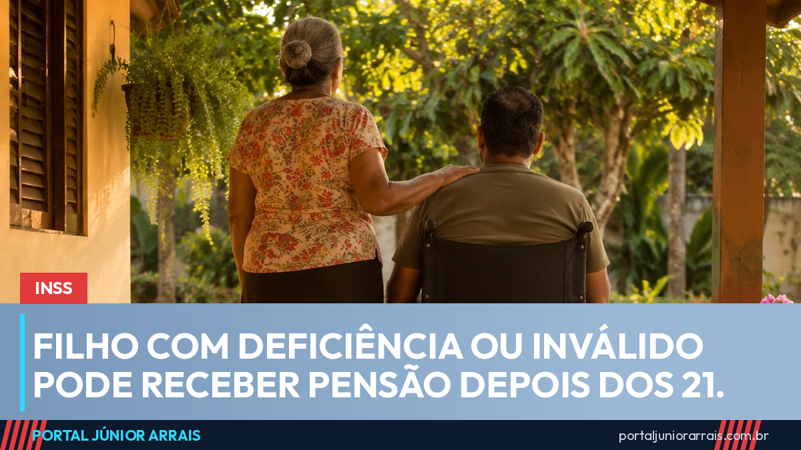

Pensão por morte para filho inválido ou com deficiência continua depois dos 21 anos

Em regra, o filho recebe pensão por morte do pai ou da mãe segurados do INSS só até completar 21 anos. Mas há uma exceção importante: o filho inválido ou que tenha deficiência intelectual, mental ou grave continua recebendo depois dessa idade, enquanto durar a condição. A regra está na Lei 8.213/91, art. 16, I, que lista esse filho como dependente de primeira classe, e no art. 77, § 2º, II, que mantém a cota além dos 21 anos.
Quem tem direito
O filho precisa estar em uma destas situações:
- invalidez: incapacidade total para qualquer trabalho, por doença ou acidente;
- deficiência intelectual ou mental, como síndrome de Down, autismo com grande comprometimento ou esquizofrenia grave;
- deficiência grave, como cegueira total ou paralisia que limite fortemente a vida independente.
A dependência econômica do filho é presumida: não é preciso provar que ele vivia às custas do segurado. Também não importa se o filho é casado ou se mora em outra casa — o que conta é a condição de saúde.
Quando a invalidez precisa ter começado
Este é o ponto que mais gera negativa. A condição precisa existir antes da morte do segurado. O INSS, por norma interna, já chegou a exigir que a invalidez tivesse começado antes dos 21 anos, mas esse requisito não está na lei, e a Justiça tem reconhecido o direito do filho que ficou inválido depois dos 21, desde que antes do óbito. Se o pedido for negado só por esse motivo, vale procurar orientação.
Como pedir e a perícia
O pedido é feito pelo aplicativo ou site do INSS, ou pelo telefone do INSS. O filho passa por perícia médica e, no caso de deficiência, também por avaliação biopsicossocial. Leve laudos, exames e relatórios que mostrem a doença e, principalmente, desde quando ela existe. Documentos antigos, como prontuários, laudos escolares e registros de tratamento, ajudam a provar que a condição é anterior à morte do segurado.
Se o filho é interditado ou tem curador, o pedido é feito pelo curador. O tema está nesta matéria sobre dependentes do INSS.
Quanto vale e quanto tempo dura
A pensão é dividida em cotas entre os dependentes. Pelas regras da Reforma, o valor é de 50% da aposentadoria que o segurado recebia (ou teria direito) mais 10% por dependente, até 100%. Quando há dependente inválido ou com deficiência intelectual, mental ou grave, a pensão é de 100% até o limite do teto do INSS, enquanto ele existir como dependente.
A cota do filho inválido dura enquanto durar a invalidez. O INSS pode convocar para nova perícia periodicamente, e a cota cessa se a condição deixar de existir. Para o filho com deficiência intelectual, mental ou grave, o art. 77, § 6º, da Lei 8.213/91 diz que exercer atividade remunerada, inclusive como MEI, não impede a concessão nem a manutenção da cota.
As regras gerais de duração e valor estão nesta matéria sobre pensão por morte.
Cuidado com golpe
Famílias que acabaram de perder alguém são alvo de golpistas que ligam dizendo ser do INSS e oferecem "liberar a pensão" mediante pagamento. O INSS não cobra para conceder benefício e não liga pedindo depósito.
Também não entregue a senha do gov.br do dependente para estranhos. Com ela, é possível contratar empréstimos e mudar a conta onde o benefício é pago.
Conteúdo informativo — não substitui orientação individualizada sobre o seu caso.
Júnior Arrais · Advogado e editor do Portal Júnior Arrais
Advogado (OAB/MG 193.054, OAB/SP 535.563, OAB/RJ 268.781, OAB/PE 71.237, OAB/AL 24.340-A e OAB/PA 41.782-A), atuante em direito previdenciário e trabalhista, e comunicador de Ubá (MG). Escreve todos os dias sobre benefícios sociais, INSS, trabalho e economia do dia a dia, a partir do Diário Oficial, de portarias e de fontes oficiais, em linguagem simples. Conheça a linha editorial e a política de correções do portal.